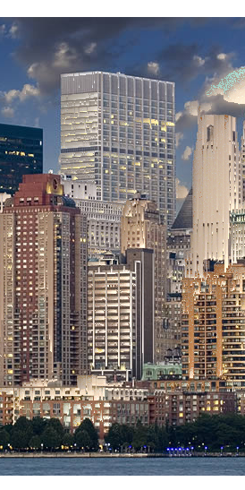
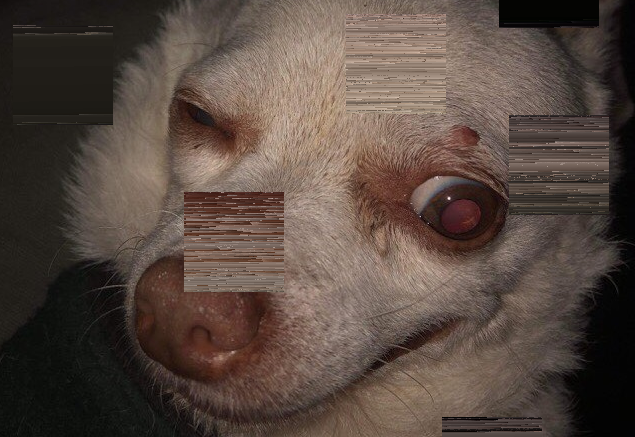

Experiment 4 - Images/Video and Sound art: Hue Sorting
Imitate
I was initially interested in pieces that manipulated images. This which led me to a very interesting work, done by Antonio Belluscio, which sorted the pixels in an image.
thought it would be a fun project to sort my beautiful and photogenic 17 year old Chihuahua: Mac
the code was a bit dense, but I eventually figured out that it works with individual pixels by packing RGBA values into single 32bit integers which it stores in an array.

I got the sorting code to work on the webpage with Mac and started thinking of ways I could mess with it.
Integrate
First, I needed to figure out how to actually edit and swap around the pixels once they are packed
I started out by manually changing the pixels. I would pack new RGBA values into an int myself, then load them into the canvas pixels
however this would prove to be a bit unnecessary, as I could just re-arrange the array of packed ints, which is how the original code did it
the original sorted the entire images pixels column by column and row by row, I wanted to make it only sort by a set area at a time.
I came up with selecting a random point in the image, then taking in every pixel in a box coming from that point and putting it in a 2d array
I tested grabbing the area by swapping the x/y coordinates of all the pixels in the array

now I could grab an area of pixels I needed to figure out how to properly sort them. As it turns out sorting assorted RGB colors in a 2D visually pleasing way is a bit of a problem, as it needs to sort by three distinct values.
After some research I decided I would try to sort my pixels by hue, HSL format, because its much easier to get similar colors with just the first hue value.
I found a javascript converter from RGB to HSL, by Michael Jackson, so that I could work with my RGB pixels in HSL
Innovate
To make my HueSort function, I first needed store my RGB values as HSL. I also decided to convert from my 2D array (for columns and rows) to a 1D array as it's much easier to sort.
I then do an array.sort() with a custom comparator function that sorts by the hue value, then the lightness value if they match. Finally, we convert the newly sorted array back to RGB values and updated our pixels
at first I made this happen on click, but eventually I switched it to sorting a single small area once every frame
For sound, I wanted to to reflect the sorting of the image by playing sound that would oscillate in frequency by how un-sorted each area was.
I already had my custom comparator function that was running through every comparison, so I averaged out the differences in hue and lightness in each comparison, and changed the amplitude and frequency of a constant oscillating sound based on those numbers
What you end up with is the frequency chaotically changing at first when the image is unsorted, but as the hues are seperated, the average difference in each area lowers, and the sound becomes more level and lower frequency. And just as well in the image, as the pixels fall into hue order, the image slows down it's changes and tends toward a certain shape.
Reflection
this experiment took me to a lot of cool places. I spent q hile trying to figure out the problem of color sorting, I very nearly went with another method, I found on an article covering the topic, using Hilbert Curves to map in higher dimensions, but the link to how that worked was broken and I couldn't figure out how I would reverse engineer that without an extra week to do it.
In the end, I really like the hue sort I ended up with, it looks really weird, and although it doesn't perfectly sort it visually, I think it does look really cool, and the sounds I got it to make are so much fun to listen to.
by far the hardest part was figuring out how to work with the pixel bit-management. Packing and unpacking the pixels was mostly already written, but converting it into HSL, working across a 1 dimensional array, and converting back into packed RGB pixels made me stop and scratch my head for a long time.
once I got over that hump the rest came fairly quickly.